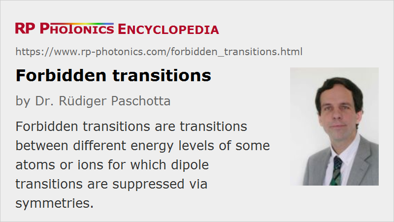

Forbidden Transitions
Definition: transitions between different energy levels of some atoms or ions for which dipole transitions are suppressed via symmetries
More general term: optical transitions
German: verbotene Übergänge
Categories: lasers, physical foundations
How to cite the article; suggest additional literature
Author: Dr. Rüdiger Paschotta
Atoms or ions have different electronic energy levels, and transitions between such levels often involve the emission or absorption of light (photons). An absorbed photon can deliver the energy for an atom or ion to get into a higher-lying energy level, whereas spontaneous or stimulated emission releases energy which was previously stored in the atom or ion. Such transitions are used e.g. as laser transitions in laser gain media.
The likelihood of such transitions depends on the electronic levels involved. Strong transitions are those where certain selection rules are satisfied. For example, dipole transitions can occur only between energy levels with the angular momentum parameter l differing by one. Therefore, dipole transitions between energy levels with same parity are not allowed, i.e. they are forbidden. Some “less strongly forbidden” transitions are those which would be forbidden if the approximation of LS coupling were exact.
Dipole-forbidden transitions between energy levels may nevertheless occur based on other mechanisms such as quadrupole transitions. Also, for ions embedded in a crystal lattice or in a glass, internal electric and magnetic fields can break certain symmetries, so that e.g. originally dipole-forbidden transitions become possible by mixing of states with different parity. Such processes, however, are usually much less likely, i.e., they exhibit a small oscillator strength. The resulting transitions are sometimes called weakly allowed transitions rather than forbidden transitions, because there are mechanisms for such transitions, although not very strong ones. Whereas typical upper-state lifetimes are of the order of a few nanoseconds in the case of allowed transitions for spontaneous emission, forbidden transitions of isolated atoms or ions can have upper-state lifetimes of milliseconds or even many seconds, and for ions in crystals or glasses typically between microseconds and milliseconds. Such long-lived levels are called metastable states.
Essentially all the laser transitions in doped-insulator solid-state lasers (but not in semiconductor lasers and color center lasers) are weakly allowed transitions which are enabled by internal electric fields. The low transition rates lead to long upper-state lifetimes, allowing significant energy storage, which is the basis of pulse generation by Q switching. The combination of long upper-state lifetimes and low transition cross sections also causes a tendency for spiking phenomena and pronounced relaxation oscillations for such lasers.
Note that the achievable gain on forbidden transitions is not necessarily lower than for allowed transitions, because spontaneous emission is also weak. In other words, the σ−τ product can be large despite the small emission cross section σ, because the weak transitions allow for a high upper-state lifetime τ.
Forbidden transitions of isolated atoms or ions are used for optical clocks (clock transitions). Here, the long upper-state lifetime is important because it leads to an extremely narrow linewidth of the transition, so that the transition frequency is very well defined.
Questions and Comments from Users
Here you can submit questions and comments. As far as they get accepted by the author, they will appear above this paragraph together with the author’s answer. The author will decide on acceptance based on certain criteria. Essentially, the issue must be of sufficiently broad interest.
Please do not enter personal data here; we would otherwise delete it soon. (See also our privacy declaration.) If you wish to receive personal feedback or consultancy from the author, please contact him e.g. via e-mail.
By submitting the information, you give your consent to the potential publication of your inputs on our website according to our rules. (If you later retract your consent, we will delete those inputs.) As your inputs are first reviewed by the author, they may be published with some delay.
See also: spontaneous emission, stimulated emission, upper-state lifetime, metastable states, optical frequency standards, optical clocks, The Photonics Spotlight 2011-03-13
and other articles in the categories lasers, physical foundations
|  |
If you like this page, please share the link with your friends and colleagues, e.g. via social media:
These sharing buttons are implemented in a privacy-friendly way!